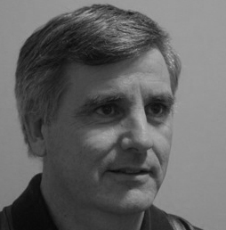

|
| Services | Experience | Our Leadership | Our Consultants |
Larkspur Network Solutions Inc. is a team of IT professionals with backgrounds in network architecture, design and solution implementation for large and small network projects; from inception to installation. Ours is a complete IT service offering, from architecture to installation. We are the only IT company in Alberta to be licensed to practice engineering. We perform business analysis, program management, network architecture, network design, specification of components, procurement, installation and documentation of small & medium–sized networks as well as large corporate enterprise networks and Data Centers. We’ll even keep an eye on your network so you don’t have to. The Larkspur team excels in well-designed and cost-effective IT Networks, successful on-time project delivery, and demonstrated passion for client satisfaction. Contact us to find out how we can help you. Call us today! +1-587-315-6548 (t) +1-587-315-6546 (f) |
* End-to-end project management– from initiation to completion * Communication system conceptualization and complex system design * Network (LAN,WAN, Wireless) performance analysis * Wireless site survey and environmental analysis * 24/7 network monitoring (LAN,WAN, Wireless) * IP telephony (VOIP) design and deployment * Configuration, installation, testing, and commissioning of network devices * Network disaster recovery conceptualization, planning, and design * Network product evaluations and proof of concept services * Deployment of advanced network systems (firewalls and other network security) * Branch and office network upgrades and office relocations * Foundation services (DNS, DHCP, WINS, Active Directory) * Cable infrastructure specification, design, contracting, and implementation coordination services * Data center design, including floor layout, cabinet/rack footprint, power, data cabling, telco cabling, and diverse pathing for telco facilities and other environmental considerations (e.g. HVAC) When it comes to IT services, few can match the complete offering of Larkspur Network Solutions. We are the only IT company in Alberta licensed to practice engineering by the Association of Professional Engineers and Geoscientists of Alberta (APEGA). Every project is different. Our approach to your needs means you are getting a one-of-a-kind network. We work within your existing environment to accommodate your specific requirement. With a focus on working around and with existing infrastructure, while at the same time gaining new functionality, means fewer issues (or major overhauls), for you. This is where our engineering skills and over 15 years experience allows that little bit of planning to go a long way. If we commit to the work, then we will see it through from beginning to end, providing all the expertise and resources required to complete the project. Already started and feeling overwhelmed? Slice off the work and give it to Larkspur Network Solutions so you can forget about it. We thrive on challenge and no job is too large, too diverse or too difficult for our team to take on. |
| Our Experience is Your Gain
Larkspur Network Solutions has a proven record of satisfying clients through effective project delivery. Larkspur’s expertise and skills portfolio covers all facets of telecommunication and network project delivery including Project Management and Coordination, Network Architecture, Engineering and Design, Materials Procurement and Management, and Implementation and Commissioning. The service offering is adaptable and can be customized to meet client needs. We excel at collaborating with operational teams and transitioning projects to operational management. Our documentation is our hallmark, from architecture and design through as-building. Larkspur also offers remote monitoring and management services for client networks. Services can be customized to meet client requirements. We offer scalability and adaptability. Environments Larkspur has delivered networks in broad range of environments. We have designed and implemented networks for large, medium and small data centres, and for corporate environments from campuses, office towers and branch offices. Our experience extends to working in harsh industrial environments from oil and gas plants, to pipeline facilities and electrical substation and generating facilities. We work with most network equipment vendors, including Cisco Systems, Hewlett-Packard, Aruba Networks, Avaya, Juniper, F5, Digi International, Rockwell Automation, and N-Tron. Whatever the client’s environment, we have the knowledge, ability and understanding to integrate and deliver the required network, using the equipment best suited to the situation and the client’s need. Larkspur has successfully delivered LAN and WAN installations as well as network security perimeters for both Internet and extranet connectivity. We have extensive experience with both wired and wireless networks of various sizes. Industries Larkspur has a client base than spans a broad range of industries, including: Oil & Gas Financial Utilities & Pipelines Education Transportation Real Estate Government |
Tim Winn– Chief Executive Officer Tim Winn has over twenty years experience as a project manager, marketing manager, production line manager and engineer in the information technology (IT) services and telecommunications manufacturing industries. Tim’s experience ranges from simultaneously managing multiple, small local initiatives to large, multi-year projects spread across diverse geographic locations in complex customer environments, leading teams of anywhere from 5 to 50+ people. His work has included projects in the Banking, Manufacturing, Telecommunications, Health Care, Bio/Pharma/Life Sciences and Petroleum industries. He has lead projects in such diverse areas as network (LAN & WAN) upgrades and network segmentation design, firewall installation and replacement, virtual private network (VPN) setup, storage system strategy development, IT infrastructure design and implementation, packaged software application deployment, PC rollouts and assembly line setup and operation. Tim is known for his solid communication skills, attention to detail, team-focused approach, determination, and aptitude for rapid understanding of new technologies. He has a track record for delivering quality solutions on time and to customers’ specifications. Tim is a Project Management Professional with the Project Management Institute (PMI) and a Professional Engineer with APEGGA. He holds an MBA with an option in Operations and Information Technology. He has trained, coached and mentored other project managers and team members, and is recognized as a senior contributor to his company’s PM profession and respected team leader. |
Leighton Stockton– Executive Officer Leighton Stockton has over 20 years experience as a telecommunication and network engineer in the design and architecture of information technology (IT), telecommunications and real-time utility telecontrol systems. Leighton’s experience ranges from designing and implementing enterprise networks, to LAN and WAN engineering, to transport telecommunication engineering. He has developed solutions for both small and very large, complex projects for local, regional and international clients. His work includes projects in the Utility (both electrical and pipe line), Banking and Financial, Telecommunications, Health Care, Pharmaceutical and Petroleum industries. He has designed data centre LAN and SAN infrastructure systems, enterprise office tower LAN solutions, branch office LAN and WAN environments, Wireless LANs, real-time operational networks, and SCADA and remote measurement circuits. His WAN engineering experience includes the design of point-to-point RF systems, point-to-multi-point RF systems and fibre optic systems. Leighton has built a reputation for being able to develop strategic plans and commission tactical solutions, he delivers high quality results and excels in a team environment. Leighton holds a Bachelor of Science in Electrical Engineering. He is a Professional Engineer registered with APEGGA and has performed the role of Responsible Member on the Permit to Practice Engineering for four different companies during his career, supervising designs and coaching and mentoring other team members. |
{kind=link}
{kind=link}